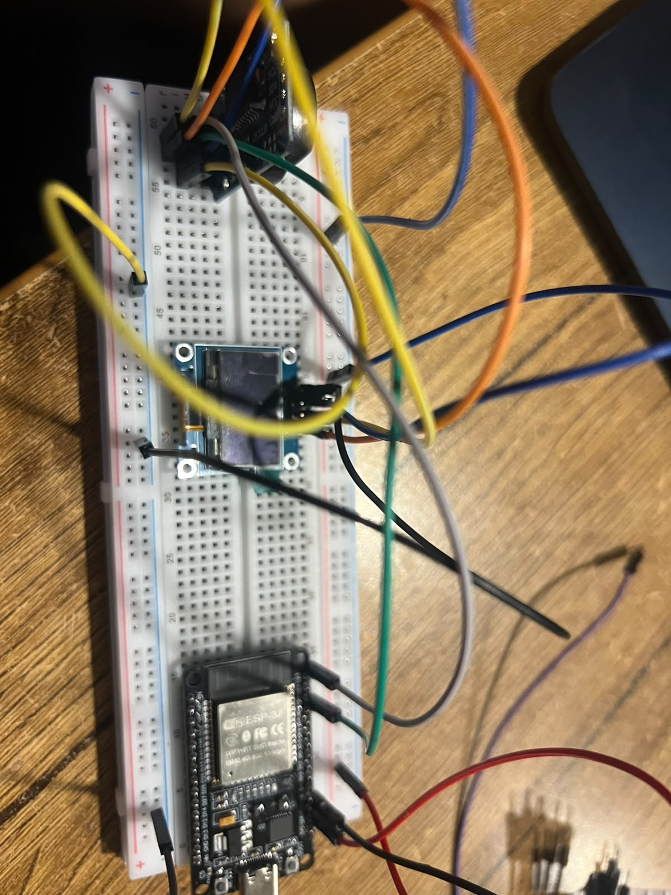
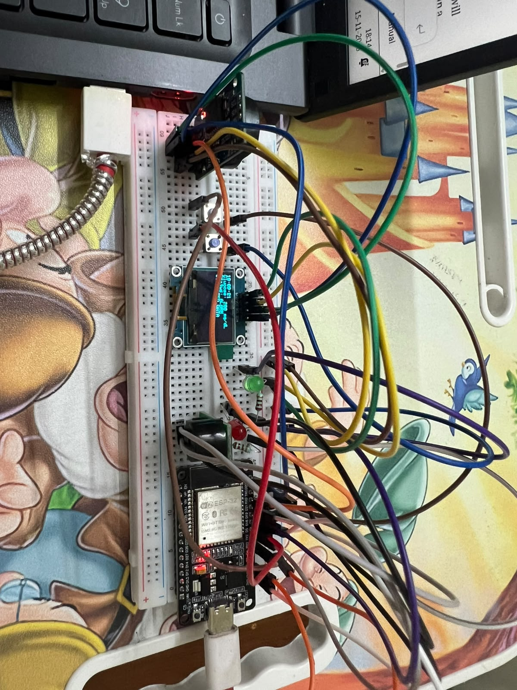
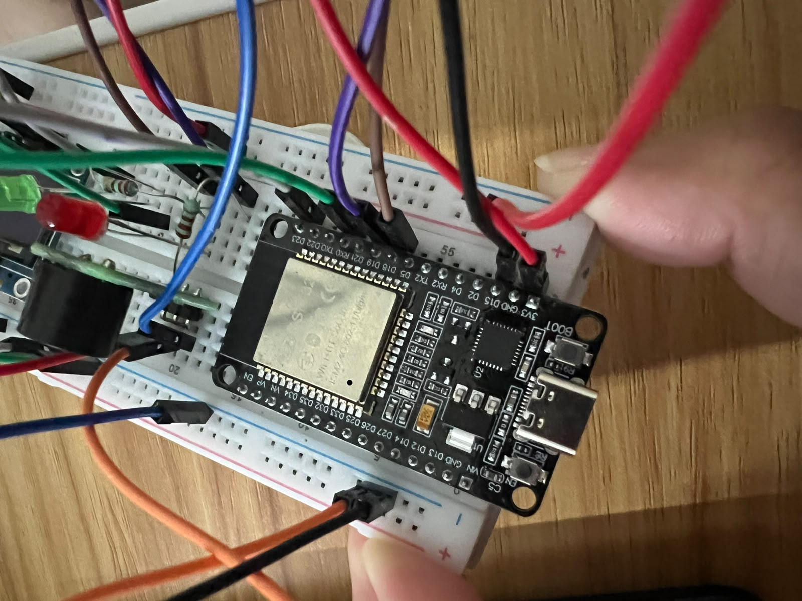
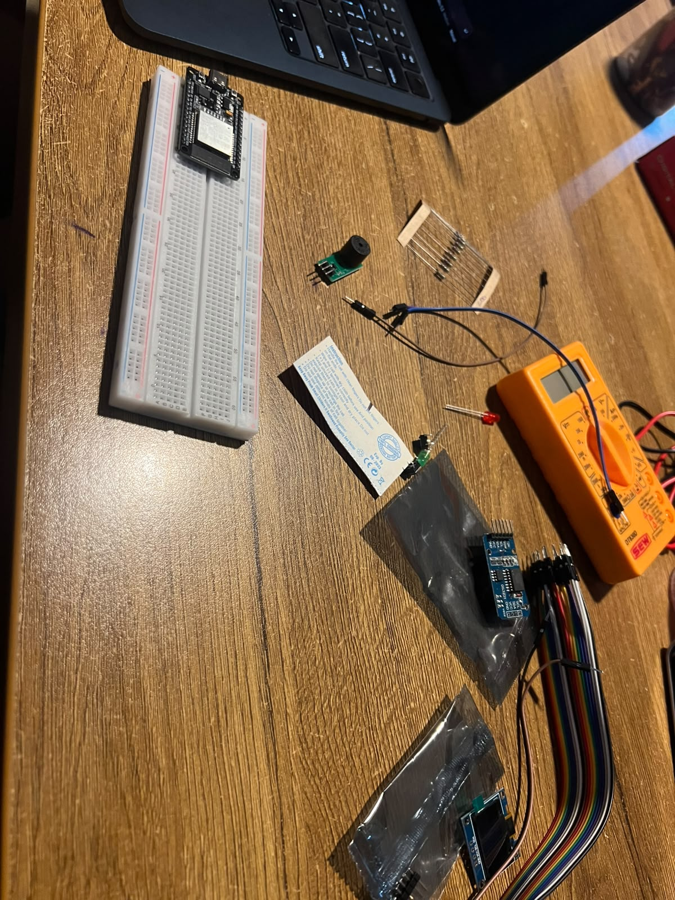
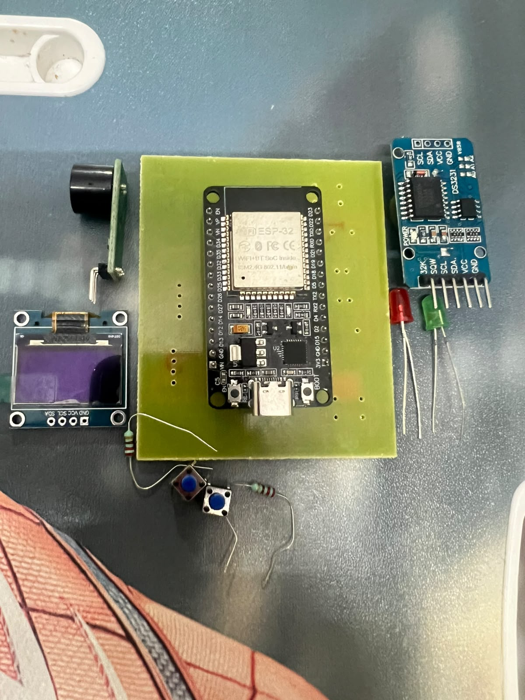
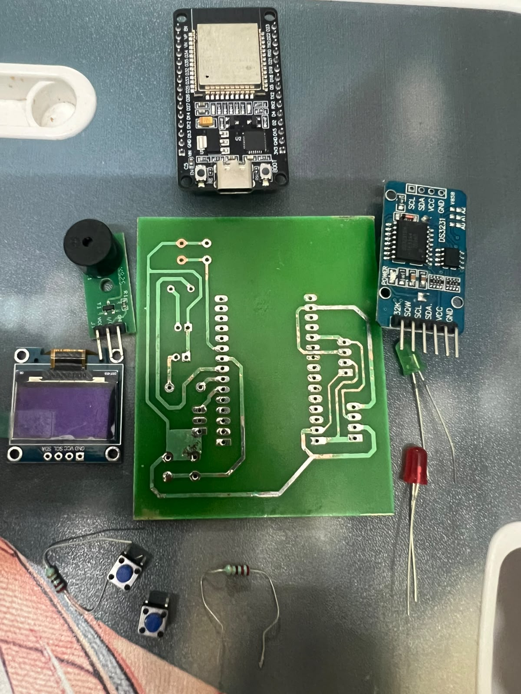
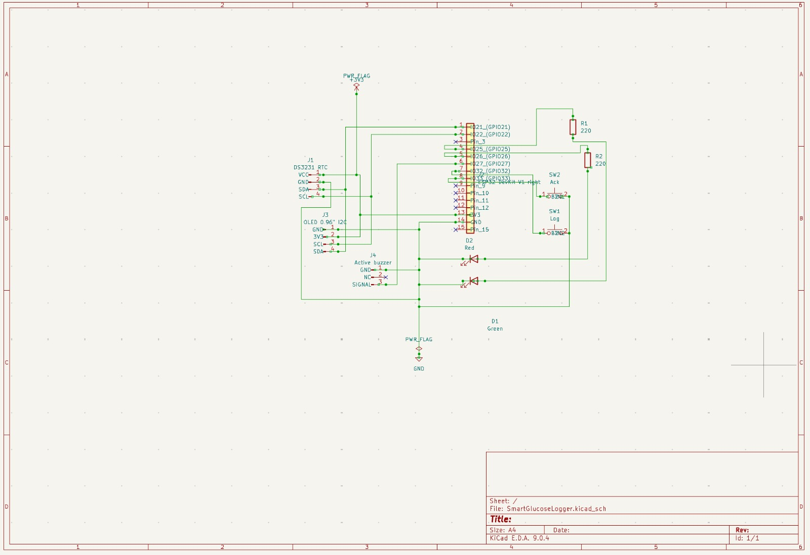
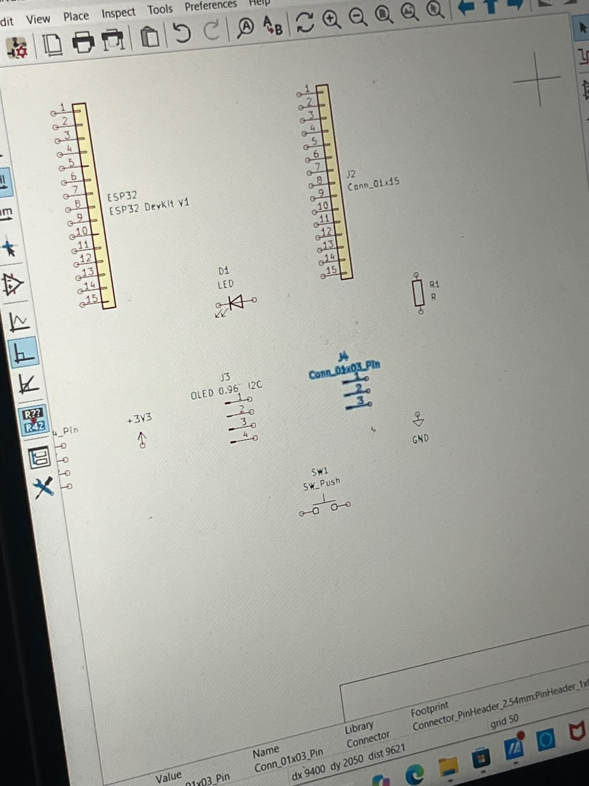
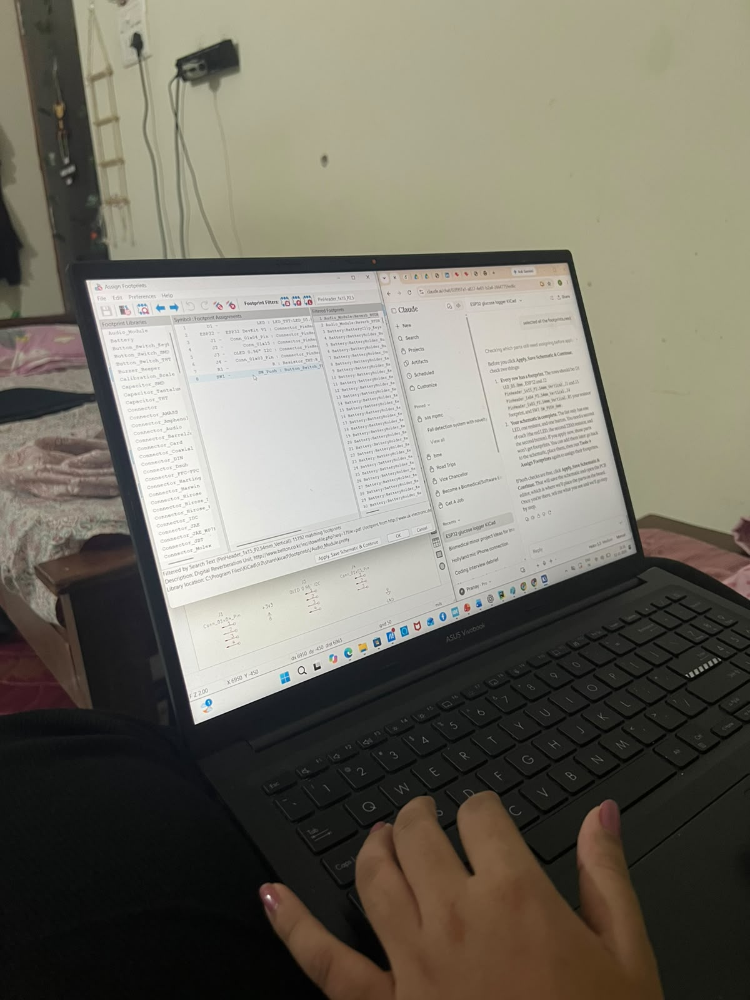

Smart GlucoseLogger
An ESP32-based prototype that pairs threshold alarms with timed dose reminders.
One interface for readings and reminders.
The ESP32 compares glucose values with low and high limits, timestamps activity with a DS3231 real-time clock, and presents status on an OLED. LEDs and a buzzer provide immediate local alerts.
- ALARM LIMITS
- < 70 / > 180 mg/dL
- DOSE REMINDERS
- 08:00 · 20:00
- USER INPUT
- Acknowledge · Log
Why combine these functions?
A glucose threshold event and a scheduled dose reminder are different events, but both need the user’s attention. Putting them on one device gives each alert the same display and local sound and light outputs. It also keeps the prototype’s timing, state handling and user acknowledgement in one firmware loop.
Prototype input
The current firmware cycles through a fixed array of test values every five seconds. This makes the low and high alert paths repeatable during development. The array is a stand-in for sensor data; it is not a glucose measurement.
From reading to alert.
- Every five seconds, select the next value from a fixed test array.
- Latch an alarm when a value is below 70 or above 180 mg/dL.
- Check the RTC for the configured reminder times.
- Flash the red LED and buzzer during an alert; keep the green LED on when clear.
- Use Ack to clear alerts or Log to print the current value and timestamp to Serial.
The alarm state remains set after an out-of-range reading, even if the next test value is within range. Acknowledge clears both glucose and dose-reminder states. This keeps an alert visible until it has been noticed.
Readings are printed to the Serial Monitor with a date and time. The current implementation does not write them to non-volatile storage, so the log is lost when the serial session ends.
The ESP32 development board is the controller. The DS3231 supplies calendar time over I²C, and the SSD1306 OLED uses the same bus. The two buttons and three alert outputs connect directly to GPIO.
I²C: SDA GPIO 21, SCL GPIO 22
Inputs: Ack GPIO 5, Log GPIO 4
Outputs: Red LED GPIO 19, Green LED GPIO 18, buzzer GPIO 17
Logging: Serial Monitor at 115200 baud
Shared bus, separate jobs
The RTC and display share SDA and SCL but use different I²C addresses. The RTC provides time for dose checks and log timestamps; the display presents the current time, reading and state. Buttons use internal pull-ups, so a pressed button reads LOW.
Prototype in action.
Breadboard assembly with the OLED, RTC and alert outputs connected to the ESP32.
Designed, wired, iterated.
The breadboard build helped expose pin conflicts and module-orientation issues before the design moves to a finished PCB.









How the code makes decisions.
Complete Arduino sketch for the ESP32. Scroll inside the code panel to inspect the pin setup, display and RTC initialization, reading logic, reminders, buttons and alert outputs.
#include <Wire.h>
#include <RTClib.h>
#include <Adafruit_GFX.h>
#include <Adafruit_SSD1306.h>
// Pin assignments
#define SDA_PIN 21
#define SCL_PIN 22
#define RED_LED 19
#define GREEN_LED 18
#define BUZZER 17
#define ACK_BTN 5
#define LOG_BTN 4
// Glucose alarm limits (mg/dL)
const int LOW_LIMIT = 70;
const int HIGH_LIMIT = 180;
const unsigned long READING_INTERVAL = 5000;
// SIMULATED test values (not from a sensor)
const int simReadings[] = {110, 95, 65, 150, 200, 120, 88, 170};
const int simCount = sizeof(simReadings) / sizeof(simReadings[0]);
// Insulin dose times (24-hour clock)
const int DOSE_HOUR[] = {8, 20};
const int DOSE_MIN[] = {0, 0};
const int DOSE_COUNT = 2;
Adafruit_SSD1306 display(128, 64, &Wire, -1);
RTC_DS3231 rtc;
int currentReading = 0;
int simIndex = 0;
unsigned long lastReadingTime = 0;
bool alarmOn = false;
bool reminderOn = false;
int lastReminderKey = -1;
bool blinkState = false;
unsigned long lastBlink = 0;
void logEntry(DateTime t, int value, const char* tag) {
char buf[90];
sprintf(buf, "%s %04d-%02d-%02d %02d:%02d:%02d %d mg/dL (SIMULATED)",
tag, t.year(), t.month(), t.day(),
t.hour(), t.minute(), t.second(), value);
Serial.println(buf);
}
void nextSimulatedReading() {
currentReading = simReadings[simIndex];
simIndex = (simIndex + 1) % simCount;
if (currentReading < LOW_LIMIT || currentReading > HIGH_LIMIT) {
alarmOn = true;
}
}
void setup() {
Serial.begin(115200);
pinMode(RED_LED, OUTPUT);
pinMode(GREEN_LED, OUTPUT);
pinMode(BUZZER, OUTPUT);
pinMode(ACK_BTN, INPUT_PULLUP);
pinMode(LOG_BTN, INPUT_PULLUP);
Wire.begin(SDA_PIN, SCL_PIN);
if (!display.begin(SSD1306_SWITCHCAPVCC, 0x3C)) {
Serial.println("OLED not found");
while (true) delay(100);
}
if (!rtc.begin()) {
Serial.println("DS3231 not found");
while (true) delay(100);
}
// Set the clock only if its battery has run out
if (rtc.lostPower()) {
rtc.adjust(DateTime(F(__DATE__), F(__TIME__)));
}
display.setTextSize(1);
display.setTextColor(SSD1306_WHITE);
// Startup beep to confirm the buzzer works
digitalWrite(BUZZER, HIGH);
delay(200);
digitalWrite(BUZZER, LOW);
}
void loop() {
DateTime now = rtc.now();
// Glucose: new test reading every READING_INTERVAL
if (millis() - lastReadingTime >= READING_INTERVAL) {
lastReadingTime = millis();
nextSimulatedReading();
logEntry(now, currentReading, "AUTO");
}
// Insulin reminder: fire at each scheduled dose time, once per minute
int nowKey = now.hour() * 60 + now.minute();
for (int i = 0; i < DOSE_COUNT; i++) {
int doseKey = DOSE_HOUR[i] * 60 + DOSE_MIN[i];
if (nowKey == doseKey && nowKey != lastReminderKey) {
reminderOn = true;
lastReminderKey = nowKey;
}
}
// Log button: record the current value with a timestamp
static bool lastLogState = HIGH;
bool logState = digitalRead(LOG_BTN);
if (lastLogState == HIGH && logState == LOW) {
logEntry(now, currentReading, "LOG");
}
lastLogState = logState;
// Ack button: silence the glucose alarm and the insulin reminder
if (digitalRead(ACK_BTN) == LOW) {
alarmOn = false;
reminderOn = false;
}
// Alarm output: red LED and buzzer blink for either alert
bool anyAlert = alarmOn || reminderOn;
if (anyAlert) {
digitalWrite(GREEN_LED, LOW);
if (millis() - lastBlink > 250) {
lastBlink = millis();
blinkState = !blinkState;
digitalWrite(RED_LED, blinkState);
digitalWrite(BUZZER, blinkState);
}
} else {
digitalWrite(RED_LED, LOW);
digitalWrite(BUZZER, LOW);
digitalWrite(GREEN_LED, HIGH);
}
// OLED: refresh when the time or reading changes
static int lastSec = -1;
static int lastShown = -1;
if (now.second() != lastSec || currentReading != lastShown) {
lastSec = now.second();
lastShown = currentReading;
char l1[24], l2[24], l3[24], l4[24];
sprintf(l1, "%02d:%02d:%02d", now.hour(), now.minute(), now.second());
sprintf(l2, "Glucose: %d mg/dL", currentReading);
sprintf(l3, "Status: %s",
alarmOn ? "ALARM" : (reminderOn ? "INSULIN DUE" : "OK"));
sprintf(l4, "SIMULATED DATA");
display.clearDisplay();
display.setCursor(0, 0);
display.println(l1);
display.println(l2);
display.println(l3);
display.println(l4);
display.display();
}
delay(20);
}
Reading and threshold logic
nextSimulatedReading() selects an array entry, advances the index, then checks the limits. The index wraps at the end so the demonstration repeats. An out-of-range value sets alarmOn; an in-range value does not clear it.
Time and reminders
The DS3231 is read at the start of each loop. At 08:00 and 20:00, the reminder state is set once during the matching minute. If the RTC reports that its backup battery lost power, setup adjusts it to the firmware compilation time. The reminder guard currently stores only hour and minute; to repeat reminders on later days, it should use a date-aware key.
Outputs and refresh
When an alert is active, the red LED and buzzer toggle every 250 ms and the green LED turns off. Otherwise, red and buzzer are off and green is on. The OLED redraws when its displayed second or the reading changes.
Timing trade-off
millis() schedules readings and blinking without waiting for each interval to finish, leaving the loop free to check buttons and time. The sketch still uses a short delay at the end of each loop and a 200 ms startup beep.
Execution: The main loop coordinates sampled input, clock checks, button handling, alert outputs and display refresh.
Prototype status.
The breadboard build demonstrates the display, RTC, button handling and local alarm outputs. The schematic and PCB are still being brought into line with the working wiring, so the current board design is not ready for fabrication.
| Area | Status |
|---|---|
| Breadboard build | Assembled |
| OLED and RTC | Displaying time and status |
| Alarm behaviour | Demonstrated |
| KiCad schematic | Being aligned to final pin map |
| PCB | Footprints placed; routing remains |
Next steps.
- Align the schematic with the working pin map, then finish PCB routing and add the board outline.
- Add flash or SD-card storage so timestamped logs persist after power-off.
- Make alarm thresholds and reminder times configurable rather than requiring a firmware upload.
- Integrate a calibrated glucose sensor only after defining its electrical interface, calibration method and measurement checks.
The sensor interface is the largest open design task. The alert logic can be demonstrated with test values, but real measurements require a suitable sensing method and validation before they can be interpreted.
Current boundaries
Values come from the firmware test array; logs only go to Serial; reminder times are fixed at 08:00 and 20:00; and wireless reporting is not implemented. The PCB layout and final hardware behavior still need completion and review.
One device, fewer missed alerts.
Readings and dose reminders often live in separate tools, forcing users to monitor multiple alert sources. This project combines threshold alarms and an RTC-based dose reminder on one ESP32, with a shared display and local sound and light alerts.
Build stages and lessons.
- Requirements: define alarm limits, dose times and outputs.
- Hardware: wire the breadboard and check power rails with a multimeter before connecting the ESP32.
- Firmware: add RTC, OLED, buttons and output logic using Arduino libraries and millis-based timing.
- Bring-up: check display, clock, buttons and alerts; correct the RTC time when needed.
- PCB: update the KiCad schematic, then complete the layout (in progress).
Challenges encountered
- ESP32 header conflicts led to pin reassignment away from boot-strapping pins.
- The RTC needed a manual time correction after its backup battery had run out.
- Connector orientation and breadboard row/column layout required careful checking.
GPIO connections.
| I²C SDA / SCL | 21 / 22 |
| Red / green LED | 19 / 18 |
| Buzzer | 17 |
| Ack / Log button | 5 / 4 |
Buttons use internal pull-ups, so a press reads LOW. The RTC is I²C address 0x68 and the OLED is typically 0x3C.
LED resistor note
Estimate LED current with I = (V_supply − V_f) / R. At 3.3 V with 220 Ω, a red LED with about 2.0 V forward voltage draws roughly 6 mA. A green LED near 3.0 V draws roughly 1 mA with the same resistor and may look dim. Check the actual LED datasheet.
Technical sources.
- Espressif Systems, ESP32 Series Datasheet.
- Analog Devices, DS3231 Extremely Accurate I²C-Integrated RTC/TCXO/Crystal Datasheet.
- Solomon Systech, SSD1306 128 × 64 Dot Matrix OLED Driver Datasheet.
- NXP Semiconductors, I²C-bus specification and user manual (UM10204).
- KiCad official documentation.
Made by the team.
B.Tech Biomedical Engineering (Core)